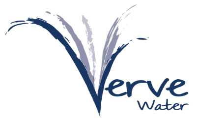

Every business works differently. We design and build tailored systems that fit your operation, empower your people, to help you achieve your goals.
Complex software won't fix a broken process. Rather than forcing unnecessary digital layers into your business, we engineer practical solutions that fit your frontline reality: resilient tools, streamlined workflows, and clear operational data. Build the foundation properly, and scale follows naturally.
We take time to understand how your business actually works before perscribing technology & writing code.
The right solution isn't always the most complex one. We focus on practical improvements that create measurable value.
Strong foundations, reliable systems, and scalable workflows that grow alongside your business.
Custom software designed around the way your business actually operates. From frontline data capture to management reporting, we build systems that fit your workflows instead of forcing you to change them.
Eliminate manual data entry by connecting equipment, sensors, scanners, and operational devices directly into your workflow.
Give your teams the tools they need to execute efficiently while providing management with clear visibility into operations.
A clear, collaborative process designed to reduce risk, align expectations, and deliver practical outcomes.
Initial scoping call or onsite meeting to understand facility operations, frontline workflow challenges, technical bottlenecks, and project objectives.
A comprehensive project proposal outlining requirements, recommended technical architecture, deliverables matrix, timeline schedule, and fixed commercial structure.
Solution development delivered through structured milestones with bi-weekly updates, stakeholder reviews, hardware integration, and offline resilience stress-testing.
Controlled production rollout, frontline staff onboarding, documentation, complete intellectual property transfer, and optional monthly SLA maintenance.
Every business operates differently. Rather than forcing projects into predefined packages, we scope each solution around your operational requirements, objectives, and expected outcomes.
Whether you require workflow automation, custom software, systems integration, operational dashboards, or a complete end-to-end platform, every engagement begins with a detailed discovery process and a clearly defined project framework.
Projects are scoped against clearly defined deliverables and milestones. No open-ended consulting fees. No surprise invoices.
Most projects commence with a 50% deposit, with the remaining balance due upon project completion and handover.
Ongoing support, maintenance, enhancements, and future development can be provided through flexible monthly service retainers.
Third-party platforms utilized in creating your businesses solution are licensed directly by your business. This ensures full control of your subscriptions, accounts, and operational data while avoiding unnecessary reseller markups or vendor dependency.
Direct feedback from operational leads running on our custom architectures.

“These workflows just work! Start small and scale up.”
“Simple transformed our workflows into a smarter, more efficient system that's easy to use. If you want practical automation and streamlined operations, I highly recommend them.”
Absolutely. We are technology-agnostic and select the right tools based on your operational requirements. Depending on the problem, that may involve custom software, workflow automation, reporting dashboards, hardware integrations, or existing platforms such as ClickUp, Power BI, and Supabase.
Our goal is never to force your business into a particular tool. It's to build the solution that fits best.
Sometimes. Our project fees cover solution design, implementation, and onboarding. Any third-party software subscriptions are paid directly by your organisation, ensuring full ownership of your accounts, data, and licensing.
Following an initial discovery session, we develop a comprehensive project framework defining deliverables, milestones, timeline, and commercial terms. Each project is scoped individually around your operational requirements so there are no open-ended consulting fees and no surprise invoices.
Yes. Your data always remains yours.
We build solutions with security, privacy, and long-term maintainability in mind. Your organisation retains ownership of its operational data and maintains direct control over any third-party platforms, accounts, and subscriptions used within the solution.
Every project is different, but most engagements are delivered in clearly defined milestones. Smaller workflow improvements may take a few weeks, while larger operational systems are typically implemented over several phases.
Yes. After implementation, we can provide ongoing maintenance, enhancements, training, and strategic guidance as your operational requirements evolve.
If your team relies heavily on spreadsheets, manual data capture, duplicate work, or disconnected software tools, custom workflow engineering may provide a more efficient long-term solution.
Not every operational challenge requires a complex system. Let's map out your current workflows, identify the largest bottlenecks, and determine the simplest path to improvement. Sometimes that's automation. Sometimes it's software. Sometimes it's fixing the process first.
Lead Systems Architect
Stellenbosch & Durban, South Africa
Direct calendar booking. No sales reps or qualification tiers.